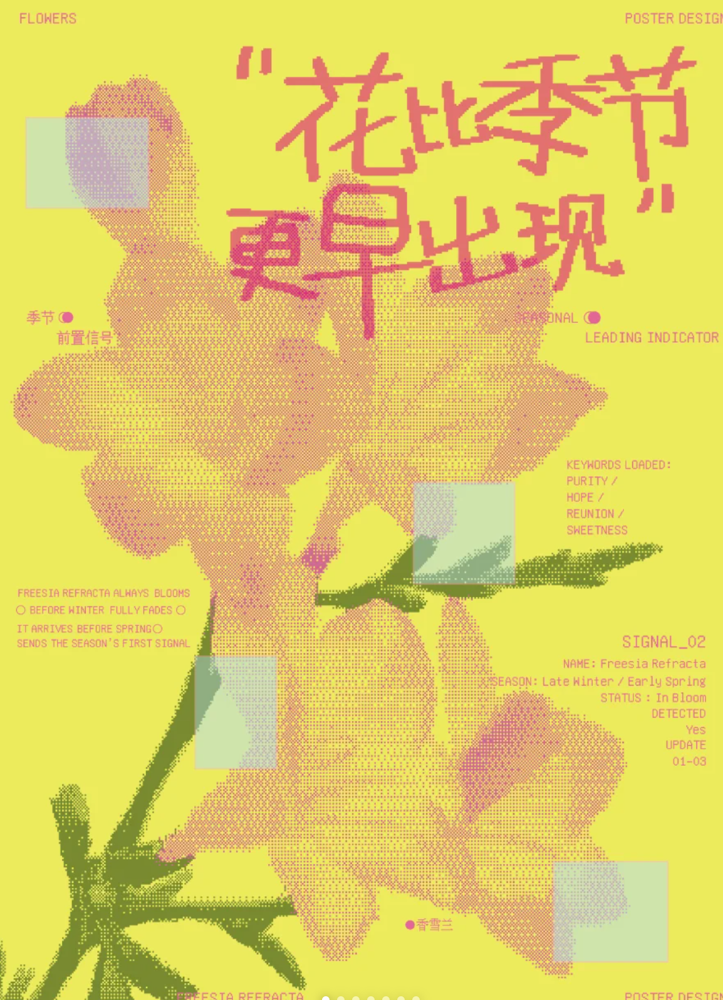
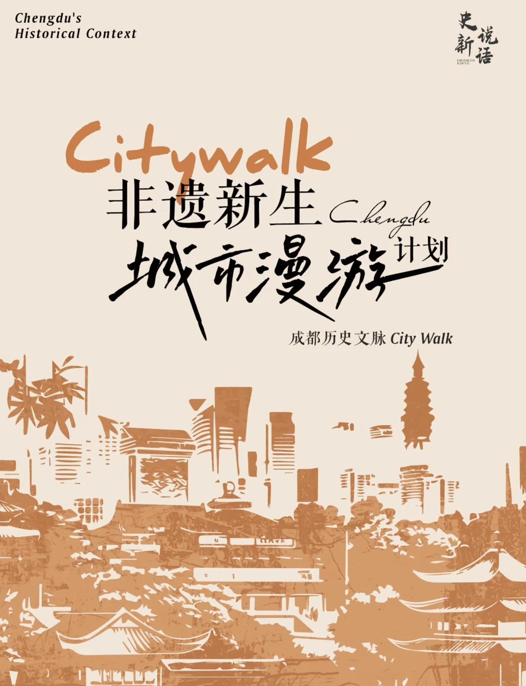
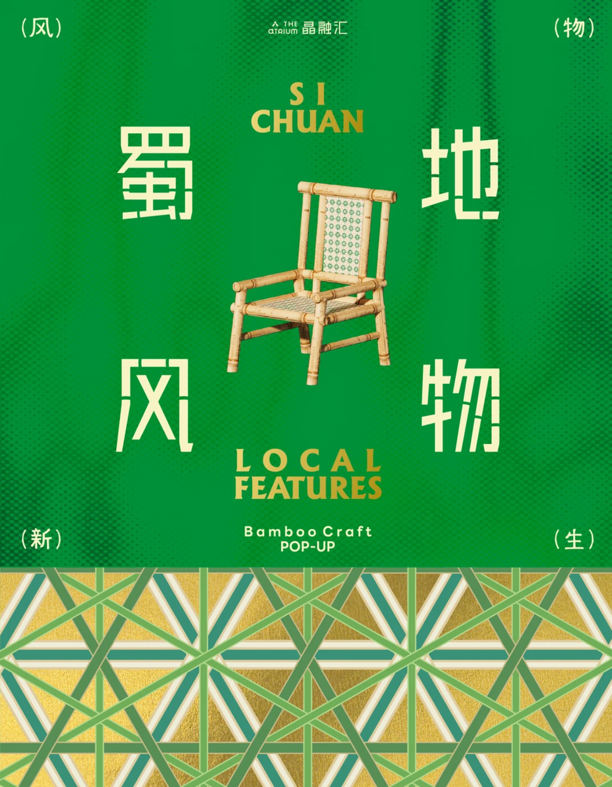
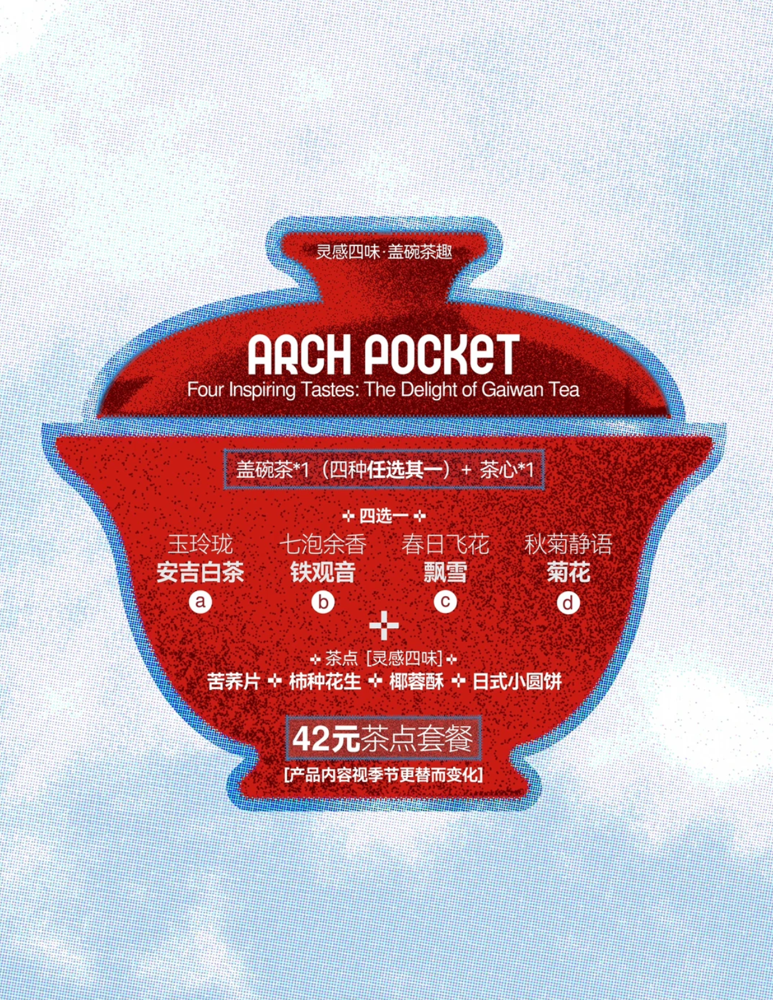

TOTAL HUB
成都城市音乐厅
年会专家、学生团队和公众聚集的城市枢纽。户外广场与公共回廊可承载项目概念展、种子交换站、成果微展和小程序现场演示。
页面将项目重新梳理为“一座总枢纽、两套路线、四类空间、三幕活动”。所有节点使用现有公共空间，只加入轻量导视、可回收装置、流动展架和小程序入口。
年会专家、学生团队和公众聚集的城市枢纽。户外广场与公共回廊可承载项目概念展、种子交换站、成果微展和小程序现场演示。
项目总入口，承担年会展示、路线启程和数字导览入口。
把芙蓉导赏与盖碗茶、市民休闲结合，形成最具成都日常感的赏花节点。
橱窗、公告栏、茶馆和沿街墙面成为轻量展陈界面。
面向居民与古镇本地生活，让美育不只发生在景区。
大赛示范路线适合年会嘉宾、学生团队短时间参访；市民常态化路线支持分段打卡；洛带古镇支线回应“空间美学与城乡美育共建”。
适合年会间隙，以最短距离完成“项目概念 + 成都街巷”的体验闭环。
适合市民分段打卡，支持小程序预约、上传影像和收藏点位。
把城区共创成果带到古镇，也让古镇种子、故事与手艺回流城区。
木芙蓉不只在盛花期被观看。页面按 9-10 月盛放、10-11 月凋零、12-次年 2 月枯寂组织活动，避免概念和时间错位。
把盛放、落蓉与冬藏分别转化为可张贴、可替换、可延展的活动小帖。后续有实拍图时，可直接替换这些占位图。

用于人民公园导赏与花期提示，建立“看见蓉花”的第一层感知。

用于街巷导览与年会短路线，强化成都历史文脉与市井步行感。

用于竹编芙蓉装置、手艺人快闪和社区共创活动。

用于茶馆流动工坊、落花手作和“盖碗茶下话芙蓉”。
数字端不做复杂炫技，而是服务路线导航、活动预约、蓉花时序档案和年会专题板块，让短期示范可以沉淀为常态化项目。
A 线、B 线、年会短路线、市民完整线可切换。
区分城区场和古镇场，公益名额优先向本地居民开放。
市民上传盛放、落花、枯枝和种子照片，形成城市花事资料库。
展示 2026 年会现场微展、种子交换和示范路线影像。
年会时间落在第三幕“寒蓉冬藏”。因此现场示范不再强行做赏花，而是把枯枝、种子、年度共创作品和数字地图转化为可触摸、可讲述、可带走的展示。
枯枝样品、手作实物、项目展板、市民影像，全部使用可回收材料并在会后复原场地。
参会嘉宾领取芙蓉种子和项目手册，把一次会议体验延伸到下一季花事。
1.5 小时音乐厅到少城；半天城市完整线；一日洛带古镇调研支线。